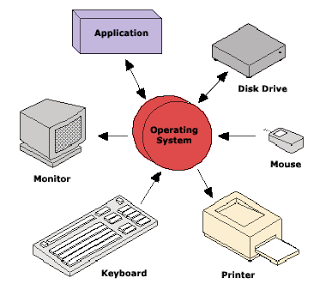

Sejarah sistem Operasi
By Awaludin Siking
Pengertian Sistem Operasi
Sistem operasi merupakan sebuah penghubung antara pengguna dari komputer dengan perangkat keras komputer. Sebelum ada sistem operasi, orang hanya mengunakan komputer dengan menggunakan sinyal analog dan sinyal digital. Seiring dengan berkembangnya pengetahuan dan teknologi, pada saat ini terdapat berbagai sistem operasi dengan keunggulan masing-masing. Untuk lebih memahami sistem operasi maka sebaiknya perlu diketahui terlebih dahulu beberapa konsep dasar mengenai sistem operasi itu sendiri.

Pengertian sistem operasi secara umum ialah pengelola seluruh sumber-daya yang terdapat pada sistem komputer dan menyediakan sekumpulan layanan (system calls) ke pemakai sehingga memudahkan dan menyamankan penggunaan serta pemanfaatan sumber-daya sistem komputer.
Sejarah Sistem Operasi
Menurut Tanenbaum, sistem operasi mengalami perkembangan yang sangat pesat, yang dapat dibagi kedalam empat generasi:
Generasi Pertama (1945-1955)Generasi pertama merupakan awal perkembangan sistem komputasi elektronik sebagai pengganti sistem komputasi mekanik, hal itu disebabkan kecepatan manusia untuk menghitung terbatas dan manusia sangat mudah untuk membuat kecerobohan, kekeliruan bahkan kesalahan. Pada generasi ini belum ada sistem operasi, maka sistem komputer diberi instruksi yang harus dikerjakan secara langsung.
Generasi Kedua (1955-1965)Generasi kedua memperkenalkan Batch Processing System, yaitu Job yang dikerjakan dalam satu rangkaian, lalu dieksekusi secara berurutan.Pada generasi ini sistem komputer belum dilengkapi sistem operasi, tetapi beberapa fungsi sistem operasi telah ada, contohnya fungsi sistem operasi ialah FMS dan IBSYS.
Generasi Ketiga (1965-1980)Pada generasi ini perkembangan sistem operasi dikembangkan untuk melayani banyak pemakai sekaligus, dimana para pemakai interaktif berkomunikasi lewat terminal secara on-line ke komputer, maka sistem operasi menjadi multi-user (di gunakan banyak pengguna sekaligus) dan multi-programming (melayani banyak program sekali gus).
Generasi Keempat (Pasca 1980an)Dewasa ini, sistem operasi dipergunakan untuk jaringan komputer dimana pemakai menyadari keberadaan komputer-komputer yang saling terhubung satu sama lainnya. Pada masa ini para pengguna juga telah dinyamankan dengan Graphical User Interface yaitu antar-muka komputer yang berbasis grafis yang sangat nyaman, pada masa ini juga dimulai era komputasi tersebar dimana komputasi-komputasi tidak lagi berpusat di satu titik, tetapi dipecah dibanyak komputer sehingga tercapai kinerja yang lebih baik.